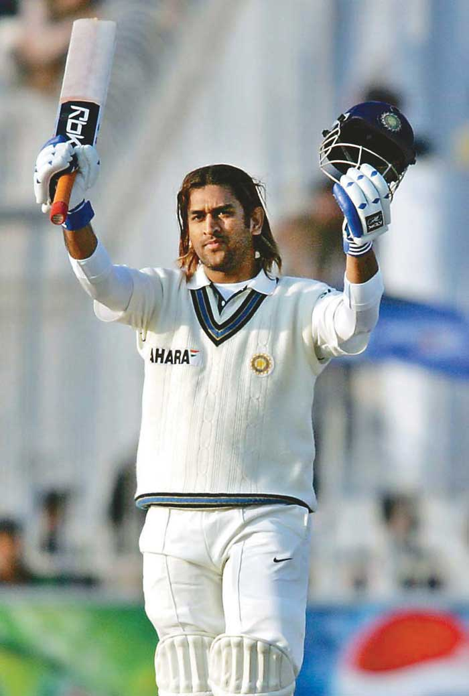

MS Dhoni had a remarkable Test career, playing 90 matches, scoring 4,876 runs, and achieving an average of 38.09 with 6 centuries and 33 half-centuries.
Test Career Statistics
Matches Played: 90
Runs Scored: 4,876
Batting Average: 38.09
Centuries: 6
Half-Centuries: 33
Highest Score: 224
